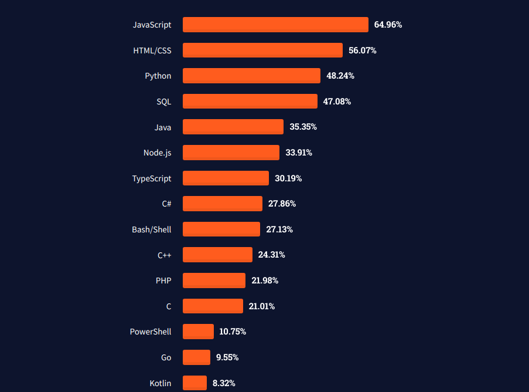

Apa itu Start-Up?
Komponen Start-Up
- Hacker (Software Development)
- Hipster (Designer and User Experience)
- Hustler (Business and Marketing)
Apa itu RPL?
Divisi IT
- Junior Programmer (Rp 4 - 6 juta)
- Senior Programmer (Rp 6 - 10 juta)
- Junior Software Engineer (Rp 5 - 8 juta)
- Senior Software Engineer (Rp 8 - 20 juta)
Divisi IT
- IT Consultant (Rp 6 - 14 juta)
- System Analyst (Rp 6 - 22 juta)
- Database Engineer (Rp 4 - 22 juta)
Apa itu Programmer?
Programmer
- Membuat sebuah sistem menggunakan bahasa pemrograman
- Memiliki skill menulis kode program (syntax)
- Contoh syntax : PHP, C, C++, dll
An Introduction of Software Developer
Apa itu Programmer?
Programmer adalah sebuah jenis profesi atau pekerjaan yang bertujuan untuk membuat sebuah sistem menggunakan bahasa pemrograman. Seseorang yang memiliki skill menulis kode program (syntax) dan merancang sistem, bisa juga disebut programmer. Kode atau bahasa program yang dimaksud seperti Java, Python, Javascript, PHP, dll.
Tipe-Tipe Software Developer

Frontend Developer

Backend Developer

Fullstack Developer
Frontend Developer
Front-End Web Developer adalah Software Developer yang bertanggung jawab untuk merancang dan membangun berbagai aplikasi web secara responsif, interaktif, dan juga user friendly.
Frontend Developer
Frontend Developer
Skill Umum Frontend Developer

Backend Developer
Back-End Developer adalah Software Developer yang bertanggung jawab dalam mengelola server, aplikasi, dan database agar dapat saling berkomunikasi dengan baik dan lancar. Seorang Back-End Developer memiliki peranan yang sangat penting karena dengan Back-End lah suatu aplikasi Front-End dapat berjalan dengan semestinya.
Skill Umum Backend Developer
Server (Teknologi HTTP/Hosting)

Database (Manajemen Database/CRUD)

Logical Thinking
Fullstack Developer
full stack developer adalah seseorang yang nyaman bekerja atau merangkap tugas sebagai back end dan front end developer. Lebih spesifiknya, developer bisa bekerja dengan javascript, PHP, java, database (backend) dan juga bisa mengkonversi desain ke dalam kode pemrograman seperti HTML, CSS, XML (front end).
Bahasa Pemrograman
Bahasa program adalah sekumpulan instruksi yang diberikan kepada komputer untuk dapat melaksanakan tugas-tugas tertentu dalam menyelesaikan suatu permasalahan. Bahasa program berfungsi untuk memerintah komputer agar dapat mengolah data sesuai dengan langkah-langkah penyelesaian yang telah ditentukan oleh programmer.
Perbedaan Bahasa Pemrograman, Bahasa Scripting dan Bahasa Markup
Level Bahasa Pemrograman
- Low Level Language
- Middle Level Language
- High Level Language
Low Level Language
Program Hello World Assembly x86
org 0x100 ; .com files always start 256 bytes into the segment
; int 21h is going to want...
mov dx, msg ; the address of or message in dx
mov ah, 9 ; ah=9 - "print string" sub-function
int 0x21 ; call dos services
mov ah, 0x4c ; "terminate program" sub-function
int 0x21 ; call dos services
msg db 'Hello, World!', 0x0d, 0x0a, '$' ; $-terminated message
Middle Level Language
Program Hello World C
#include<stdio.h>
int main() {
printf("Hello World");
return 0;
}
High Level Language
Program Hello World Python
print("Hello World")
Bahasa Pemogrograman Paling Populer
Bahasa Pemogrograman Paling Populer
- JavaScript
- PHP
JavaScript
Apa itu JavaScript
Javascript adalah sebuah bahasa komputer atau kode pemrograman yang digunakan pada website agar website tersebut menjadi lebih interaktif dan dinamis. Javascript adalah jenis bahasa pemrograman client side. JS dirilis pertama kali pada tahun 1995 di browser Netscape Navigator.